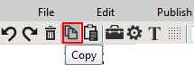
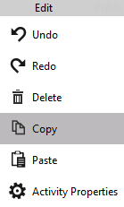
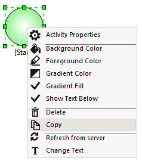

No
In the Process Designer, you can copy and paste activities of AVEVA Work Tasks. You can use this feature when you are designing large process diagrams.
If the same activity occurs at many places in the process design, you can copy the first instance and paste it at the new location. When you copy an activity all the configured property settings are also copied. However the links between the activities are not copied. You can modify the settings as required.
You can copy and paste activities within the same workflow in all the supported browsers. In Internet Explorer, you can copy activities from one workflow and paste the copied activity in another workflow across the instances.
When you copy and paste BPMN elements, only the BPMN elements are copied and pasted, and not the activities enclosed within the BPMN elements.
To copy and paste activities:
Alternatively, you can do the following:
You can also use the copy and pastes icons in the toolbar to copy and paste the activities.
You can select to copy and paste multiple activities together. To copy and paste multiple activities at the same time use the copy and paste options in the Edit menu or in the toolbar.
The following images shows different copy options in the Process Designer:
Copy option in the toolbar:

Copy option in the menu:

Copy option in the context sensitive menu:
